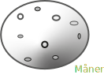

Rumhistorie
Første objekt i rummet

I Oktober...
sender U.S.S.R (Union of Soviet Socialist Republics) det første
menneskeskabte objekt ud i jordens kredsløb, Sputnik 1. Allerede
en måned efter sender de Sputnik 2 afsted med hunden Laika om
bord.
USA's første satelit
 U.S sender deres første...
satellit Explorer 1 ud i Januar og opdager jordens
rotationsbælte. I Oktober opretter U.S - NASA (National
Aeronautics and Space Administration) og får sendt Pioneer 1 ud
i rummet hvor den når en højde på 113,780621 kilometer.
U.S sender deres første...
satellit Explorer 1 ud i Januar og opdager jordens
rotationsbælte. I Oktober opretter U.S - NASA (National
Aeronautics and Space Administration) og får sendt Pioneer 1 ud
i rummet hvor den når en højde på 113,780621 kilometer.
Sovjetunionen sender Luna mod månen
Luna 1 udsendt af U.S.S.R i Januar har til mål at...
komme i månens kredsløb, men ender istedet med at blive den første satellit der kommer i kredsløb om solen.
I marts sender U.S Pioneer 4 ud og kommer ind for 59,545728 kilometer af månen.
Kapløbet fortsætter og i september sender Sovjetunionen Luna 2 ud, med en kopi af The Soviet Coat Of Arms (Sovjets nationalvåben) og bliver de første til at ramme ind i månen.
I oktober sender de Luna 3 afsted. På missionen lykkedes det at tage billeder af 70% af månens bagside.
Den første vejrsatellit

Vejrsatellitten Tiros 1 bliver ...
sendt ud af U.S. Dette er den første vejrsatellit i rummet. Tiros programmet var et eksperimentelt NASA projekt for at finde ud af om satelitter kunne bruges til at studere jorden. Programmet var en succes og i 1962 blev data fra Tiros 1 brugt af meterologer i hele verden.
De første mennesker i rummet
Sovjetunionen bliver de første til at ...
sende det første menneske i rummet. Det sker i April 1961, hans navn er Yuri Gagarin og det er ombord på fartøjet Vostok 1.
I disse år (februar 1962) får U.S også sendt den første amerikaner i rummet, John Glenn.
Det lykkedes også at få den første live-satellit Telstar 1 i kredsløb om jorden. Den amerikanske Mariner 2 bliver det første rumfartøj til at flyve forbi planten Venus.
I 1963 bliver Sovjet astronauten Valentina Tereshkova den første kvinde i rummet. Hun var deroppe i 48 timer.
De første skridt taget i rummet
Den første til at gå i rummet blev...
den sovjetiske astronaut Aleksey Leonov. Dette skete i marts. Han var ude af fartøjet i 12 minutter.
Amerikanerne følger trop og i Juni bliver Edward White den første amerikaner til at gå i rummet. Han var ude af fartøjet i 22 minutter.
Starten på udforskning af planeter

I juli måned modtager man...
de første nærbilleder af Mars. Disse er taget af det amerikanske fartøj Mariner 4.
I November sender Sovjetunionen skibet Venera 3 afsted for at udforske Venus’ overflade. Kursen er sat forkert og første forsøg mislykkedes. Kursen bliver ændret og i december kolliderer Venera 3 med Venus.
Tættere på månen

Det lykkedes i februar for...
den sovjetiske Luna 9 at lande blødt på månen. I marts sender de Luna 10 afsted og denne gang lykkedes det at komme i kredsløb om månen.
U.S følger trop og i juni lykkedes det også det amerikanske fartøj Surveyor 1 at lave en blød landing på månen. Kort efter lykkedes det også U.S at få Lunar Orbiter 1 i månens kredsløb. Lunar Orbiter 1 bliver den første til at tage billeder af jorden fra sådan en afstand.
Første dødsfald i rummet

Den sovjetiske astronaut...
Vladimir Komarov var den første til at omkomme i rummet. Komarov var chefpilot på Voskhod 1, den første flermandsbesætning i rummet.
På sin anden rumflyvining, i Sojuz 1, omkom han, da faldskærmen fejlede under landingen. Rumflyvningen havde været ramt af mange problemer og tragisk var det da Sojuz 1 styrtede til jorden.
De første bemandede månemissioner

Zond 5 bliver sendt ud af sovjetunionen og bliver...
det andet sovjetiske fartøj til at komme i kredsløb om månen og det første der kommer sikkert tilbage igen. Zond 5 transporterede de første jordiske organismer i nærheden af Månen, herunder to skildpadder, frugt, flueæg og planter.
U.S bliver de første der forsøger en bemandet månemission med skibet Apollo 7 under rumprogrammet Apollo. Månelanding modulet var dog ikke medbragt og Apollo 7 vendte tilbage 11 dage efter.
Et par måneder efter lykkedes det Apollo 8 at komme i kredsløb om månen, dette som den første bemandede rumraket.
“Et kæmpe spring for menneskeheden”

1969 var et begivenhedernes år for rummissionerne....
1969 var et begivenhedernes år for rummissionerne. I januar blev Soyuz 4 og 5 de første 2 rumraketter hvor man fik en astronaut fra et skib over i et andet.
Noget helt særligt skete dog i juli hvor mange spændt fulgte med fra stuerne. Apollo 11 landede på månen. Neil Armstrong and Edwin Aldrin var ombord og blev de første to til at gå på månen.
Måske har du hørt udtrykket »One small step for man, one giant leap for mankind« - dette sagde Neil Armstrong som det første, da han satte fod på månen.
Udforskning af månen
I April bliver Apollo 13 sendt afsted men...
da der sker en eksplosion må dens månelanding afbrydes. Besætningen vender sikkert tilbage.
Man vil utrolig gerne undersøge miljøet på månen og i den forbindelse sender Sovjetunionen i september Luna 16 afsted. Luna 16 bliver den første til at udføre en vellykket tilbagevenden med månejordprøver ombord - dette ved hjælp af et automatisk rumfartøj.
Luna 17 lander på månen i december med den automatiske robot, Lunokhod 1, der blev styret fra et kontrolpanel på jorden.
Sovjetunionen opsender en rumstation
Salyut 1 bliver den første rumstation, og...
er opsendt i april. Fartøjet Soyuz 11 transporterer i juni den første besætning derop. Besætningen dør d. 29. Juni ved et mislykket forsøg på genindrejse.
Der bliver kørt på månen
Amerikanerne David Scott og... James Irwin kører den første månebil - moon roveren. Køretøjet blev specielt designet til at køre på månens overflade og skulle bruges til at rykke rumforskningen til et nyt niveau.
1971En teori om liv på Jupiter
USA skyder Pioneer 10 mod...
Jupiter med den hensigt at gøre bekendtskab med fremmede livs former. Det skulle ske ubemandet og ved at observere planeten fra nært hold. Pioneer 10 sendte mange værdifulde informationer til jorden om Jupiter og resten af det ydre solsystem.
Det første sandsynlige sorte hul opdages af astronomer i 1972. Den får navnet Cygnus X-1.
Men hvad er et sort hul? Et sort hul er en stjerne der er løbet tør for energi, hvilket gør at den kollapser og dens indre har så enorm tyngdekraft at intet kan komme ud derfra igen.
Sovjetunionen opsender rumstationer
USSR opsender Salyut 3 - den...
første militære rumstation i Juni. De vil dog ikke frigøre information om rumstationens hensigter og missioner. Man ved dog at stationen havde et forsvarsvåben. Det mislykkedes for flere rumfartøjer at ligge til rumstationen, hvorfor man besluttede at den ikke længere skulle være i brug. Derfor sendte man en kommando om at våbnet skulle affyres ud i rummet. Salyut 3 blev sendt ud af kredsløb i 1975.
Sidst på året bliver Salyut 4 opsendt - den første civile rumstation. Besætninger fra 3 forskellige fartøjer når at have ophold på Salyut 4 - det længste 63 dage. Holdbarheden blev testet og vurderet vellykket trods lidt forringelse af de miljømæssige systemer ombord.
Møde i rummet

Den amerikanske Apollo 18 og...
sovjetiske Soyuz 19 anløber - det bliver det første internationale rumfartøjs møde. Mødets formål var at mildne den anstrengte relation mellem USA og Sovjetunionen.
Udforskning af andre planeter
Disse år går med utallige rummissioner,...
blandt de vigtigste opdagelser, er at Viking 2 lander på Mars og finder is. Dette i September 1976.
I September 1979 kommer Pioneer 11 inden for 20 921,472 km fra Saturn. Det tætteste hidtil.
Rekord tid i rummet
I maj begynder sovjetiske atronauter... en 211 dages besættelse af en af deres Salyut rumstationer, en ny rekord, der på dette tidspunkt får så meget omtale at det bliver anerkendt i Guinness World Records.
1982En amerikansk kvinde i rummet
20 år efter den sovjetiske astronaut...
Valentina har været i rummet, bliver Sally K Ride den tredje kvinde til at opholde sig i rummet. Dette sker på en mission med skibet Challenger i juni. Sally K Ride er altså den første amerikanske kvinde i rummet, og når at være der i 343 timer.
I Januar dette år sender NASA Den infrarøde astronomiske satellit IRAS ud på en 10 måneder lang ekspedition. Mange uventede opdagelser fandt sted, blandt andet nye kometer, asteroider og tegn på flere galakser og planeter.
Flere lande kommer ind i kampen
Sakigake sonden bliver affyret...
fra Japans Institut for Rum og Luftfarts Videnskab.
I april 1985 fører Rumfærgen Challenger, ESA Spacelab 3 ind i kredsløb.
I oktober 1985 bliver Spacelab D1 den første fælles ESA-mission.
I januar 1986 flyver Voyager 2 forbi Uranus. Rumfærgen Challenger havde en planlagt mission men eksploderede kort efter lift off.
Samarbejde på tværs af nationer
I februar 1994 sker et stort fremskridt...
i samarbejdet mellem USA og Rusland. Dette da en Russisk astronaut flyver i en amerikansk raket på mission for første gang.
En ny rekord bliver sat i marts 1995 da astronauten Valery Polyakov vender tilbage til jorden efter 438 dage i rummet og dermed sætter en ny rekord for længst tid i rummet.
Shannon Lucid bliver den første kvinde til at komme ombord på en rumstation. Hun ankommer i 1996.
Den internationale rumstation ISS
I 1998 bliver det første modul af hvad...
der de kommende år bliver til Den Internationale Rumstation sendt op. Stationens første modul Zarja blev sendt op af Rusland.
Rumstationen er del af et samarbejde om at samle to rumstationer fra USA og Rusland. Canada, Japan og 11 andre medlemmer af ESA er juniorpartnere på projektet.
(ESA er Den Europæiske Rumorganisation og er en sammenslutning af europæiske lande indenfor rumfart og rumforskning.)
I oktober 2000 er der jubilæum. En 10-dages mission til ISS bliver nemlig til den 100. flyvetur til rummet.
I november 2000 ankommer de første mennesker, med hensigt om fast ophold, til ISS.
SpaceX
SpaceX bliver oprettet i...
2002 og er et privat firma der designer, producerer og opsender avancerede raketter og rumfartøjer. Målet er at revolutionere rumteknologien på flere måder. Det ultimative mål er at gøre det muligt for mennesker at bo på andre planeter end jorden.
Genbrug af raketter

I marts 2017 bliver...
SpaceX de første til at lave en raket der kan genbruges. Dette lykkedes med deres Falcon 9 der efter en succesfuld mission landede på jorden igen. Allerede i Juni gør de det igen med deres fartøj Dragon. Dragon leverede vellykket forsyninger til den internationale rumstation og kom tilbage igen.